Ebin_
Films
a passionate photography who use camera
to capture &
document moment in life.
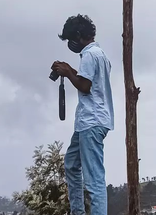

 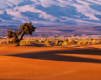
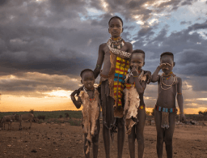
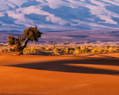
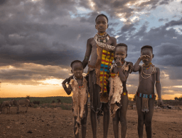
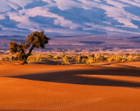
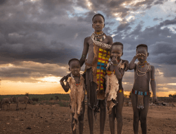
Notable
works
take a glimpse of my
aspiring photography life.
egypt
Cairo

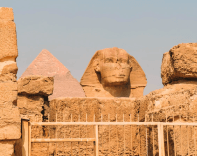
south-africa
cape town
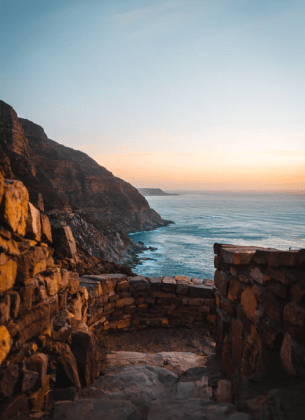
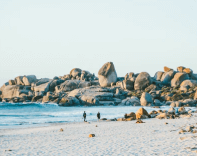
tanzania
kilimanjaro


mauritius
La Cuvette
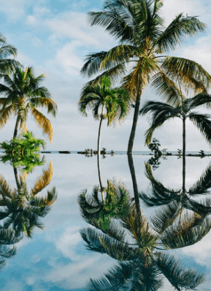
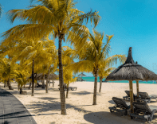
nigeria
Yankari Park
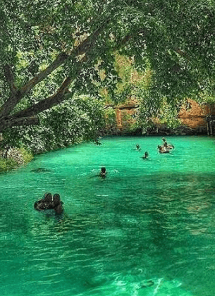
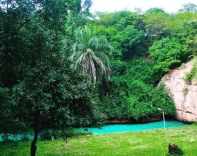
Random facts
about Me 📸
Africa is the world’s second largest continent covering about over 30 million square kilometers
Africa is the world’s second driest continent (after Australia)
Africa has approximately 30% of the earth’s remaining mineral resources
The Sahara is the largest desert in the world and is bigger than the continental USA
Africa is the world’s hottest continent with deserts and drylands covering 60% of land surface area
you’ve reached
the end of this